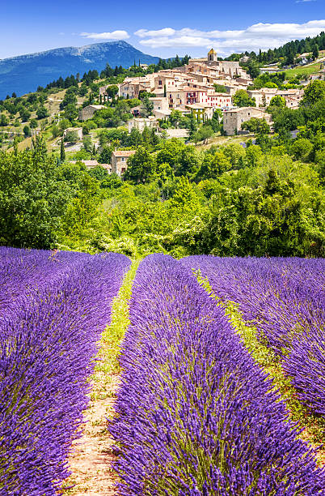
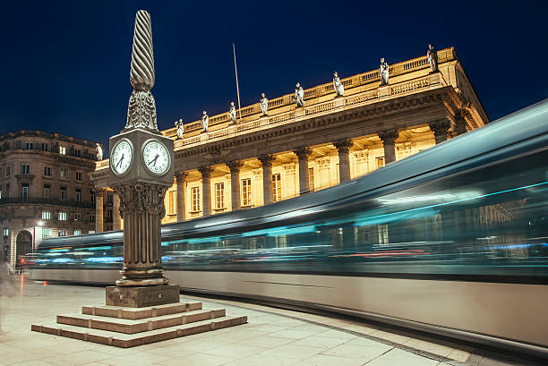

A Brief History of France
English: France has a rich and complex history, dating back to ancient times with the Gauls before being incorporated into the Roman Empire. It played a pivotal role in shaping European history through the Middle Ages, the Renaissance, and the Age of Enlightenment. The French Revolution of 1789 was a turning point, leading to the establishment of democracy. Today, France remains a cultural and political leader on the global stage.
Français: La France a une histoire riche et complexe, remontant à l'Antiquité avec les Gaulois avant d'être incorporée dans l'Empire romain. Elle a joué un rôle clé dans l'histoire européenne à travers le Moyen Âge, la Renaissance et le Siècle des Lumières. La Révolution française de 1789 fut un tournant majeur, menant à l'établissement de la démocratie. Aujourd'hui, la France reste un leader culturel et politique sur la scène mondiale.
Ελληνικά: Η Γαλλία έχει μια πλούσια και πολύπλοκη ιστορία, που χρονολογείται από την αρχαιότητα με τους Γαλάτες, πριν ενσωματωθεί στη Ρωμαϊκή Αυτοκρατορία. Έπαιξε καθοριστικό ρόλο στη διαμόρφωση της ευρωπαϊκής ιστορίας κατά τον Μεσαίωνα, την Αναγέννηση και τον Διαφωτισμό. Η Γαλλική Επανάσταση του 1789 αποτέλεσε σημείο καμπής, οδηγώντας στην εγκαθίδρυση της δημοκρατίας. Σήμερα, η Γαλλία παραμένει πολιτιστικός και πολιτικός ηγέτης στη διεθνή σκηνή.
Eiffel Tower, Paris

English: The Eiffel Tower is one of the most famous landmarks in the world and a must-visit attraction in Paris.
Français: La tour Eiffel est l'un des monuments les plus célèbres du monde et une attraction incontournable à Paris.
Ελληνικά: Ο Πύργος του Άιφελ είναι ένα από τα πιο διάσημα μνημεία στον κόσμο και ένα αξιοθέατο που πρέπει να επισκεφθείτε στο Παρίσι.
Mont Saint-Michel

English: A stunning island commune in Normandy, known for its medieval architecture and breathtaking scenery.
Français: Une magnifique commune insulaire en Normandie, connue pour son architecture médiévale et ses paysages époustouflants.
Ελληνικά: Ένα εκπληκτικό νησιωτικό χωριό στη Νορμανδία, γνωστό για την μεσαιωνική του αρχιτεκτονική και τα εντυπωσιακά τοπία.
Palace of Versailles

English: The opulent Palace of Versailles is a symbol of France’s royal history and grandeur.
Français: Le somptueux château de Versailles est un symbole de l'histoire royale et de la grandeur de la France.
Ελληνικά: Το πολυτελές Ανάκτορο των Βερσαλλιών είναι ένα σύμβολο της βασιλικής ιστορίας και του μεγαλείου της Γαλλίας.
Loire Valley

English: Known for its stunning castles, vineyards, and charming villages, the Loire Valley is a must-visit region in France.
Français: Connue pour ses magnifiques châteaux, vignobles et charmants villages, la vallée de la Loire est une région incontournable en France.
Ελληνικά: Γνωστή για τα εκπληκτικά κάστρα της, τους αμπελώνες και τα γοητευτικά χωριά της, η κοιλάδα του Λίγηρα είναι ένας απαραίτητος προορισμός στη Γαλλία.
French Riviera

English: A glamorous Mediterranean coastline known for its luxury, beaches, and vibrant nightlife.
Français: Une côte méditerranéenne glamour, connue pour son luxe, ses plages et sa vie nocturne animée.
Ελληνικά: Μια λαμπερή μεσογειακή ακτογραμμή, γνωστή για την πολυτέλεια, τις παραλίες και τη ζωντανή νυχτερινή ζωή της.
Provence
English: Famous for its lavender fields, charming villages, and Mediterranean climate.
Français: Célèbre pour ses champs de lavande, ses villages charmants et son climat méditerranéen.
Ελληνικά: Διάσημη για τα λιβάδια λεβάντας, τα γραφικά χωριά και το μεσογειακό της κλίμα.
Bordeaux
English: A world-famous wine region with stunning vineyards and rich history.
Français: Une région viticole mondialement célèbre avec de magnifiques vignobles et une riche histoire.
Ελληνικά: Μια παγκοσμίου φήμης οινοπαραγωγική περιοχή με εκπληκτικούς αμπελώνες και πλούσια ιστορία.
Luxury Stay: Hotel Ritz Paris

English: One of the most luxurious hotels in the world, the Ritz Paris offers elegance, history, and world-class hospitality.
Français: L'un des hôtels les plus luxueux du monde, le Ritz Paris offre élégance, histoire et hospitalité de classe mondiale.
Ελληνικά: Ένα από τα πιο πολυτελή ξενοδοχεία στον κόσμο, το Ritz Paris προσφέρει κομψότητα, ιστορία και φιλοξενία παγκόσμιας κλάσης.